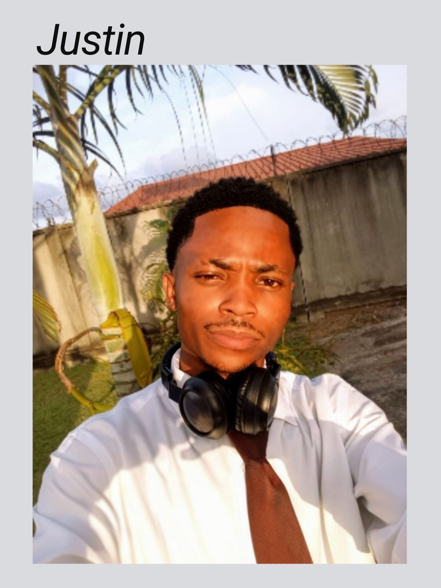

Justin Celestin Stephane Mulumba Home Page | WDD130

My name is Justin Celestin Stephane Mulumba and I am from the Republic of Congo. I am currently studying Software Development through BYU-Idaho. I enjoy web development, programming, entrepreneurship, English learning, and solving real-life problems with technology. My goal is to become a professional software developer and build technology solutions that create opportunities for individuals, families, and communities throughout Africa. I enjoy learning new skills every day and applying what I learn to meaningful projects. I am especially interested in web development, education technology, and software systems that can help schools and organizations improve their work.